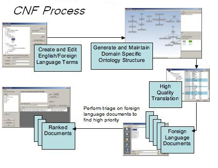

|
|
Concept Network Fusion Concept Network Fusion (CNF) is a windows based tool for Concept Network query construction, maintenance, and foreign language document search. It supports search and translation needs in dialects or languages where no machine translation (MT) resources exist. It is meant to be tailorable in the field by Analyst/Translator pairs. It has been designed to perform foreign language document “triage” ( separate out from a large group of documents those which should be fully translated based on the tactical situation at the time). It uses a network of English terms and phrases with high quality translations into foreign languages to search the repository of foreign language documents.
"No pre conceived ontologies, search for concepts, not keywords"
The structure of the Concept Network is constructed as a hyperlinked, a-cyclic, directed graph. The graph includes “Is-a”, “Peer-to” and other links between terms and phrases. The metadata in the network consists of links between terms and data associated with the links and terms/phrases. |
|
Copyright Aristech, Inc., all rights reserved